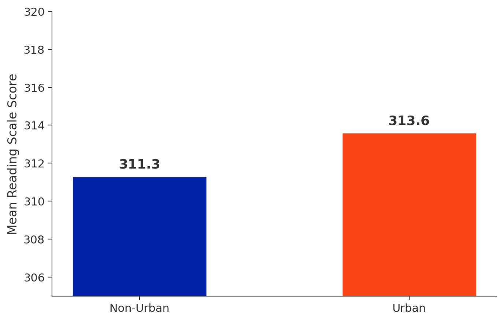
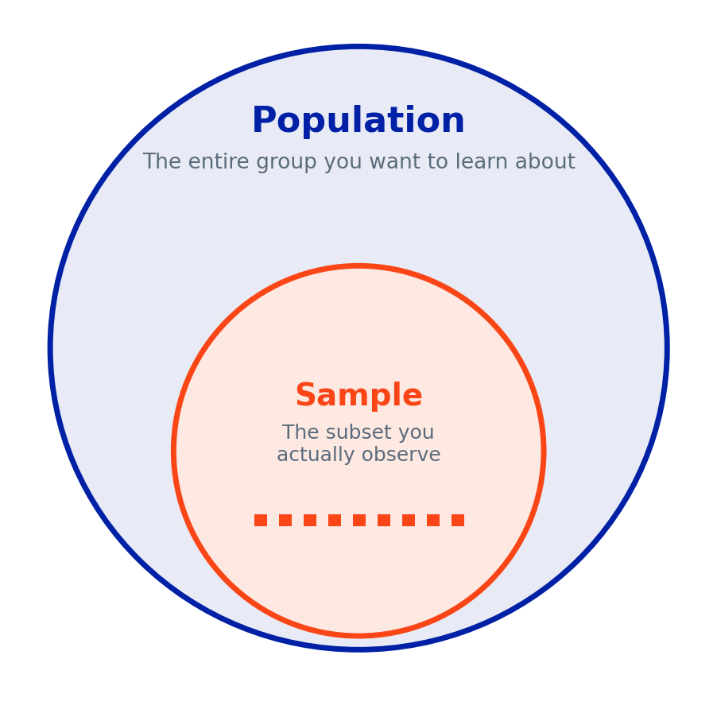
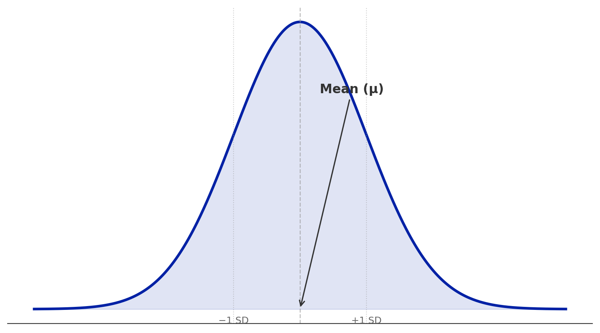
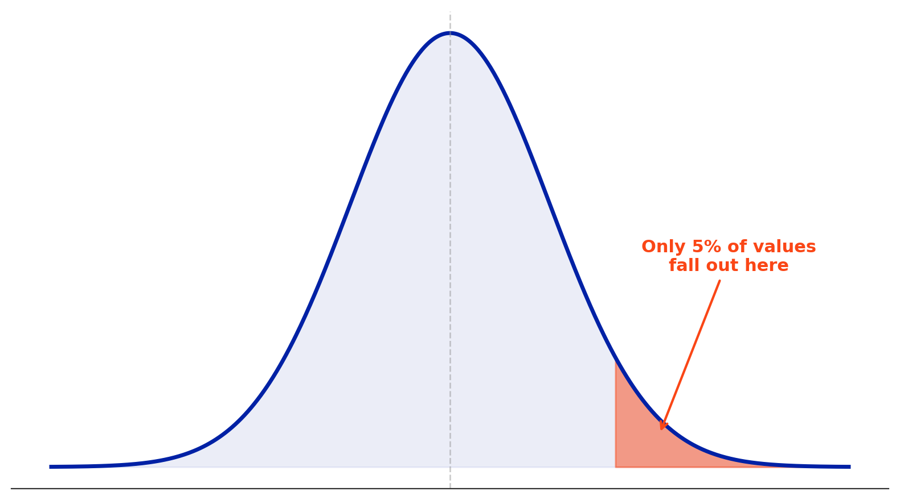
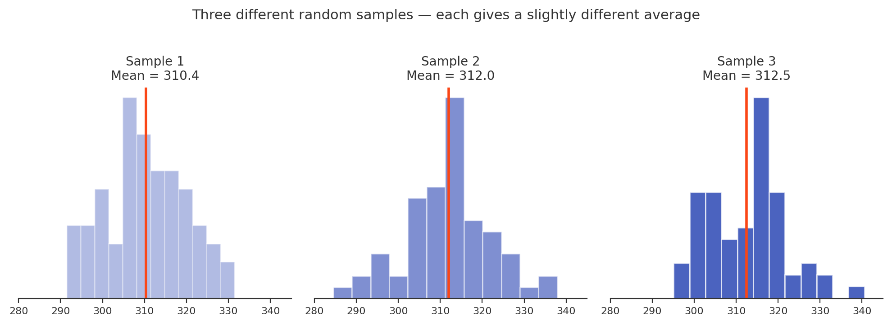
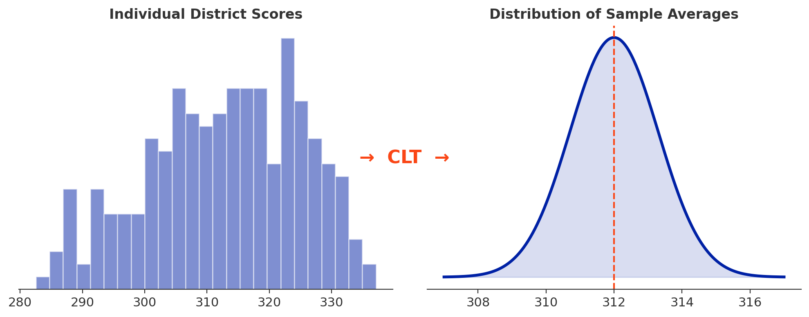
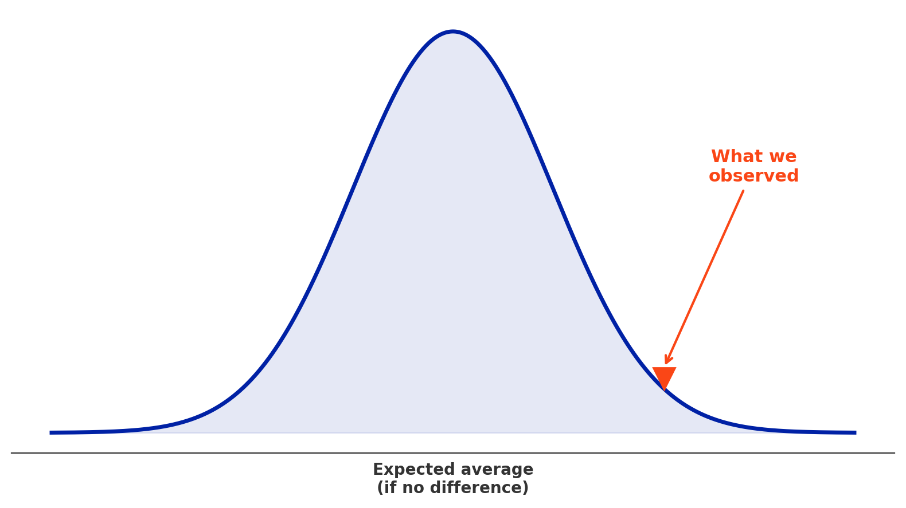
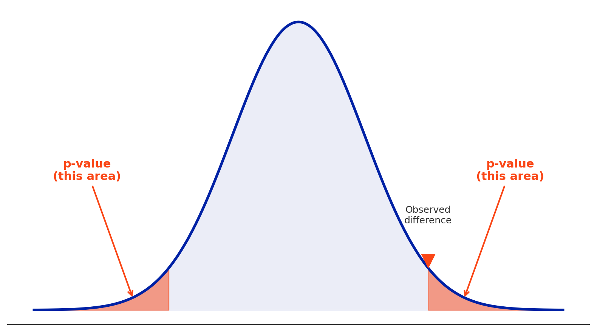
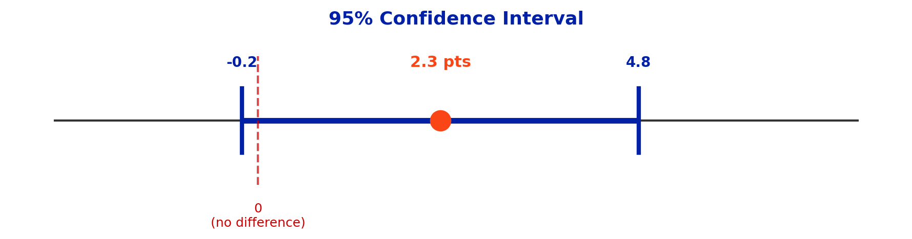

Urban districts: ~314 pts | Non-Urban districts: ~311 pts | Difference: ~2.3 pts
Is this difference real, or could it just be a product of chance?
Every dataset contains randomness. Scores fluctuate. Districts vary. If we collected the data again next year, or looked at a different set of districts, the numbers would come out a little differently.
Statistical inference is the toolkit that helps us decide when a pattern in data is likely real and when it might just be noise.

The question: what can this snapshot tell us about the bigger picture?
We never observe the whole population directly. All we actually see is a sample, and that sample could have come out differently.
10 coin flips → 6 heads? Not surprising.
10 coin flips → 10 heads? Very surprising (less than 0.1% chance).
Same logic with our data: how likely is a 2.3-point difference by chance alone? The lower that probability, the more confident we can be that the difference is real.

Most values cluster near the middle. Extreme values are rare.
FL reading scores: mean ≈ 312, SD ≈ 10.5 → most districts fall between ~302 and ~323.

We can calculate what percentage of values fall above or below any point.
This lets us quantify how surprising a result is.
The 66 Florida districts are a sample: a subset of the larger group we want to learn about, which here is all U.S. districts.
Whether Florida is a good sample for generalizing to the whole country is a separate, important question. But the core idea is that we use a part to learn about a whole. Notice the answer hinges on which population we have in mind: if we only cared about Florida districts, these 66 would be much closer to the full population.

Each sample gives a slightly different average, but they cluster around the true value.
This is the Law of Large Numbers.

Even if individual data points are messy, the distribution of sample averages is approximately normal.
This is why the bell curve keeps showing up.

Is our observed result bigger than what random chance would produce?
Middle of the distribution → not surprising. Out in the tail → surprising.
The sample averages form an approximately normal distribution centered on the true average. That is the key insight of the CLT.
Even if individual data points are scattered, the averages from repeated samples form a predictable bell curve. That predictability is exactly what makes statistical inference possible: we can estimate how much “bounce” to expect from random chance alone, and judge whether our result is bigger than that.
Think of it like a courtroom: we assume “not guilty” (no effect) until the evidence convinces us otherwise.
H₀ for our example: “There is no real difference in reading scores between urban and non-urban districts. The 2.3 points is just random noise.”

Small p-value (e.g., 0.02): surprising. The null hypothesis is not believable.
Large p-value (e.g., 0.40): not surprising. Consistent with no real difference.
This threshold is a convention, not a law of nature. A p-value of 0.049 and a p-value of 0.051 are practically identical, but one gets called “significant” and the other doesn’t.
p = 0.03 means: if there were truly no difference between the groups, there would be only a 3% chance of observing a difference this large or larger.
This is one of the most commonly misunderstood ideas in statistics. The p-value is not the probability that the null hypothesis is true (answer A). It is the probability of seeing data this extreme if the null were true. That distinction is exactly what the Nuzzo article you’re reading this week is about.

Urban–Non-Urban difference: 2.3 pts, 95% CI [−0.2, 4.8]. The interval includes zero, so we can’t rule out no real difference.
“Not significant” ≠ “no effect.” It means we don’t have enough evidence to be sure.
This is a Type I error, a false positive, a false alarm. The district concluded there was a real effect when there wasn’t one.
When we use a significance threshold of p < 0.05, we are accepting a 5% chance of making exactly this kind of mistake. This is why replication and practical significance matter alongside statistical significance: a single “significant” result can still be a false alarm.
Scenario. A superintendent sees that School A outperforms School B by 5 points on the state reading assessment. With 10,000 students in each school, the difference is statistically significant (p = 0.001).
With large samples, even tiny differences become statistically significant. Whether to act requires professional judgment, not just a p-value.
There’s no single right answer, but a strong response recognizes that statistical significance alone doesn’t tell her whether to act. Good responses raise questions like:
The takeaway: leaders need both whether a difference is real and whether it is large enough to justify action.
For this week:
All due by the deadline posted in Canvas.